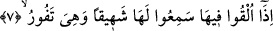

Bâzı âlimler “cehennem” kelimesinin “cihinnam” kelimesinden türediğini ifâde
etmişlerdir, Cihinnam çok derin bir kuyu anlamınadır. Bu âyet-i kerîme, cehennemlik
olanların Allah’ın cemâlinden ve cennet nimetinden uzakta kalacaklarına ve uzaklık ve
Allah’tan kopukluk ateşi içinde yanacaklarına işâret etmektedir. Biz ise Allah’tan âfiyet
dileriz.
Fethurrahman’da ifâde olunduğuna göre bu âyet-i kerîme cehennem azâbının orada
ebedî kalacak kâfirlere mahsus olduğunu içermektedir. Rivâyette yer aldığına göre
cehennemde azap çekilen dönemde öyle bir zaman gelirki cehennemin kapıları açılır ve
şefâat cehennemi boşaltır. Bu âyet-i kerîmede yer alan ise bütün tabakaları ile olan
cehennemdir. Yukarıdaki rivâyette kapılarının açılacağı ifâde olunan cehennem ise
cehennemin en üst tabakasıdır. Çünkü bu tabaka âsîlerin yer alacağı tabakadır.
Bu açıklama aynı zamanda büyük mükâşefe ehli olan birisinin cümlesinde yer alan
mânâ ile örtüşmektedir. O mükâşefe ehli şöyle der: Öyle bir zaman gelir ki cehennem
bomboş kalır, içinde hiçbir kimse olmaz. Bunlar tevhid ehli olup da âsi olanlardır. Yine
öyle bir zaman gelir ki cehennemin dibinde “cercir” biter. Cercir bakla demektir.
7. Oraya atıldıklarında, onun kaynarken çıkardığı uğultuyu işitirler.
İnkâr edenler “oraya” yâni cehenneme “atıldıklarında, onun” yâni bizzat
cehennemin “kaynarken çıkardığı uğultuyu işitirler.” Onlar cehenneme tıpkı odunun
yanmakta olan büyük bir ateşe atıldığı gibi atılırlar. Âyet-i kerîmede “idhal” yerine
“ilka” kelimesinin kullanılması, bu kişilerin hakir kişiler olduklarına, cehennemin de
süflî bir yer olduğuna işâret etmektedir. Bu kişiler cehenneme atılırlarken seslerin en
çirkini ve en fecisi olan merkep sesi gibi bir ses, bir uğultu işitirler. Bu, Allah’ın
kendilerine gazabından dolayıdır. Cehennemin bu uğultusu onun korkunç ve çirkin
sesidir. Nitekim Allah buna şöyle işâret buyurur: “Bunlar onun uğultusunu
duymazlar.” (el-Enbiya, 21/102) Âlimlerin ifâdesine göre “şehiyk” göğüsten çıkan ses,
“zefir” boğazdan duyulan sestir. “Şehiyku’l-himar” ifâdesi, merkebin en son tiz
çıkardığı ses demektir. Zefir ise anırma esnâsında çıkardığı ilk sestir. Şehiyk nefes içeri
çekilirken çıkarılan ses, zefir ise dışarı çıkarılırken oluşan sestir.
Cehennem bu esnâda alevinin ve ateşinin şiddetinden dolayı kazanın kaynaması gibi
kaynayacaktır. Cehennem böylesine kaynarken cehennemlikler de tencerenin içinde
kaynayan sudaki tanelerin aşağı yukarı hareketi gibi yukarı çıkıp aşağı ineceklerdir. Bu
ateşin içinde asla belli sâbit bir noktada duramayacakladır. Âyette geçen fiilin masdarı
olan “fevr” şiddetli kaynama demektir. Bu kelime ateş, tencere ve gazap hâllerinde
kullanılır. Arapçada “fevvârâtu’l-mâ” denilir ki bu isim tencerenin kaynamasına
benzetilmek sûretiyle kaynayan suya verilmiştir. Arapçada “fe’altu keza min fevrin”